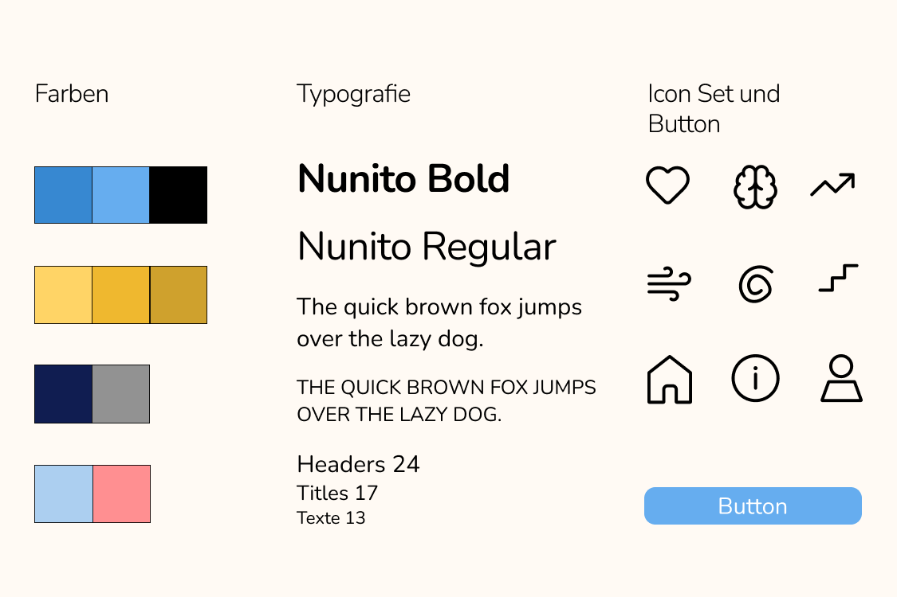
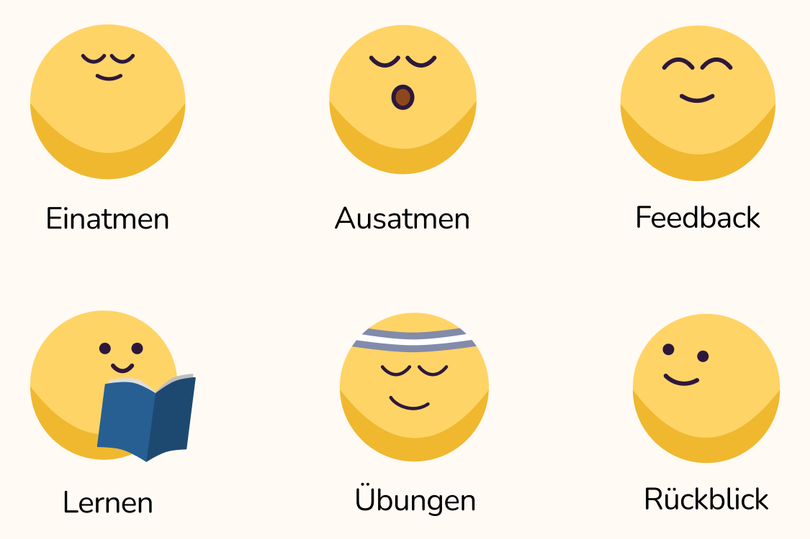

Ease: Application Invention

Calm Design
Das Designprinzip „Calm Technology" nach Mark Weiser bildete die gestalterische Leitlinie. Alle UI-Elemente sind auf kognitive Entlastung ausgerichtet: große Schrift, viel Weißraum, sanfte Übergänge, gedämpfte Farbpalette.

Geführte Übungen
Geführte Atemübungen werden durch animierte, pulsierende Formen begleitet, die die Atemfrequenz visuell vorgeben. Das integrierte Tagebuch nutzt Stimmungserfassung mit minimalem Aufwand – ein einfacher Slider, keine langen Texte.

Nutzerforschung & Prototyping
In mehreren Testzyklen mit Betroffenen wurde das Interface iterativ verfeinert. Nutzerfeedback floss direkt in die Überarbeitung der Navigation und der Interaktionsmuster ein – das Ergebnis ist eine Anwendung, die sich natürlich und unterstützend anfühlt.